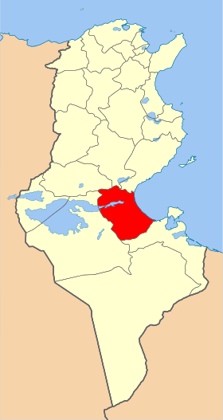
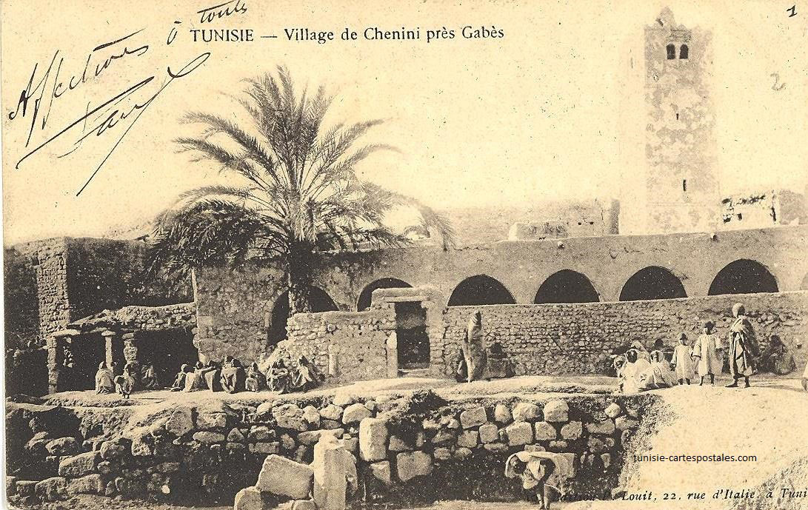
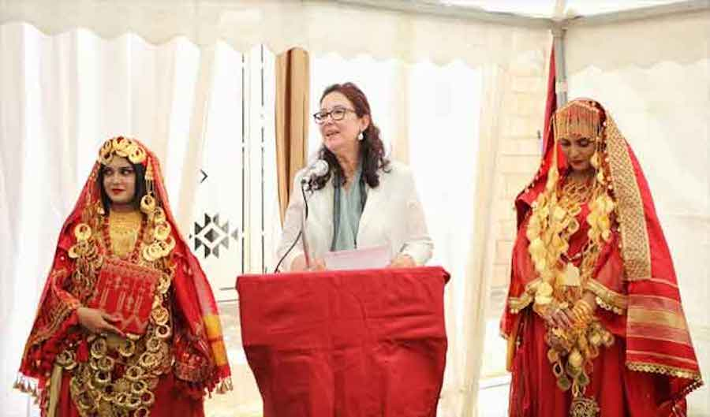
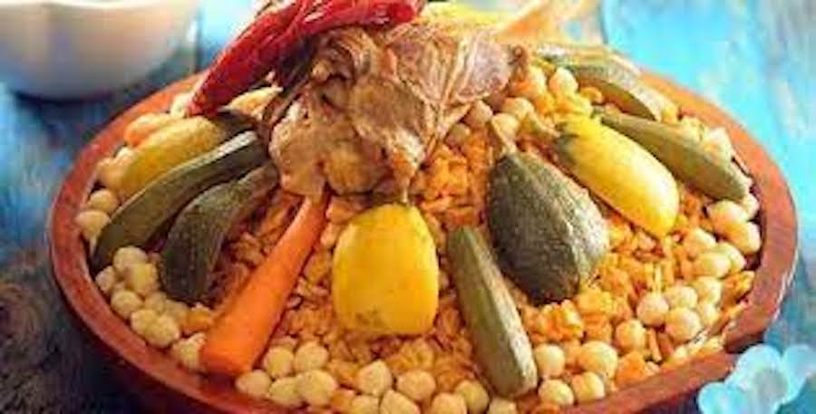
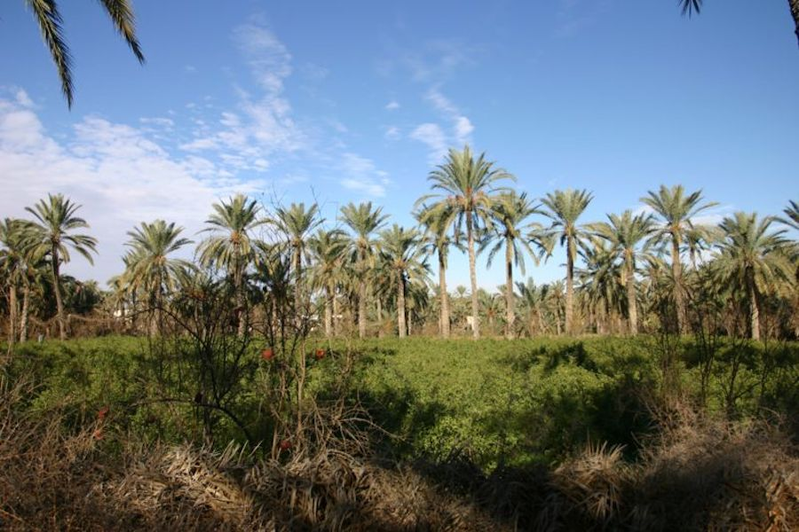
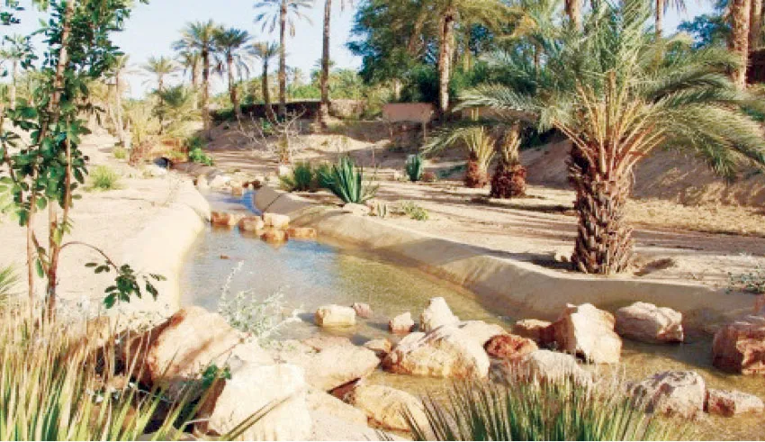

Gabes
Situé au Sud-Est de la Tunisie, le gouvernorat de Gabès s´étend sur une superficie de 7 166 Km2. Il est limité à l´Est par la Méditerranée (une côte de 80 km), à l´Ouest par le gouvernorat de Kébili, au Nord-Est par le gouvernorat de Sfax, au Nord-Ouest par le gouvernorat de Gafsa et au Sud par le gouvernorat de Médenine. La région constitue le pôle des industries chimiques de transformation du phosphate du pays avec la production d´acide phosphorique et de triple superphosphate.
Plage corniche de Gabes
Nouvelle mosquée de Jara
Musée ethnographique de Gabès
Plage el Kazma Gabès
Quelques chiffres
Superficie
7 166 Km²
Nombre de maisons
38 000
Habitants
374 300
Localisation
Situé à 105 kilomètres de la capitale, le gouvernorat de Béja constitue une zone de liaison géographique entre les gouvernorats voisins. Il est délimité par la mer Méditerranée (26 kilomètres de littoral au nord), le gouvernorat de Bizerte au nord-est, le gouvernorat de la Manouba à l'est, le gouvernorat de Zaghouan au sud-est, le gouvernorat de Siliana au sud et le gouvernorat de Jendouba à l'ouest.

Histoire
L'origine du nom de Gabès nous fait conclure que la cité a été fondée par les Berbères bien avant l'arrivée des Phéniciens qui regroupent l'une de ses agglomérations en comptoir commercial. La ville reste carthaginoise jusqu'au iie siècle av. J.-C. et la Deuxième guerre punique puis devient une colonie romaine. L'oasis devient alors un centre commercial florissant rattaché à la Tripolitaine dont Pline célèbre avec emphase la fécondité du sol. La ville est encore très prospère sous la domination byzantine. La ville est aussi le siège d'un évêché. Au début du ve siècle, nous connaissons le catholique Dulcitius et le donatiste Felix. Dans la Noticia de 484, l'évêque se nomme Servilius alors qu'au concile de Carthage de 525, il s'appelle Gaius7. De nos jours, Tacapae est un siège titulaire.

Culture

hover me
hover me
hover me
hover me